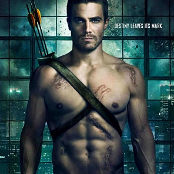

S É R I E S - M A N I A
|  | GÊNERO | Ação/Aventura |
|---|---|---|
| STATUS | Renovada | |
| ESTRÉIA | EUA 19/09/2011 | |
A série conta a história de Oliver Queen, um playboy bilionário de Starling City, que passa cinco anos preso em uma ilha após um naufrágio que põe fim a vida de todos a bordo, incluindo seu pai, Robert Queen e Sara Lance, irmã mais nova da sua namorada Laurel. Após seu retorno à Starling City, ele se reencontra com a mãe, Moira, e seu novo marido, Walter, o antigo CFO da companhia do seu pai e que agora é o novo CEO. Ele também é bem recebido pela irmã mais nova, Thea, e seu melhor amigo, Tommy Merlyn, filho do bilionário Malcolm Merlyn. Oliver também tenta reencontrar-se com a ex-namorada Laurel, mas ela o culpa pela morte da irmã, Sara, já que ambos estavam tendo um caso no momento do acidente.
Durante o dia, Oliver finge ser um playboy bilionário; à noite, ele se torna um vigilante com capuz verde, seguindo os desejos do seu pai antes de morrer, corrigir os erros da família Queen, lutar contra os males da sociedade e restaurar Starling City à sua antiga glória. O vigilante, a outra personalidade de Oliver, torna-se o foco do detetive Quentin Lance, pai de Laurel e Sara, que está determinado a prendê-lo e acusa Oliver como culpado da morte da filha e de sua esposa o ter largado, embora ele permaneça sem saber da sua verdadeira identidade. Oliver é constantemente acompanhado por seu guarda-costas, John Diggle, que mais tarde se une a Oliver em sua luta por justiça. Moira também está escondendo alguns segredos, como que ela sabe da sabotagem feita no iate da família e resultou na morte do marido.